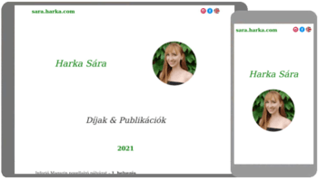
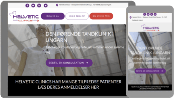

Here are some of my work. If you are interested in what I do, check out my CV.
Fullstack Note Taking App
Similar to Google Keep, made with Angular and Node.js.
Live preview:
note-app.harka.com
Source code:
GitHub
Hungarian Miniproject Collection
A collection of my recent mini projects. These are in Hungarian.
Live preview:
okj.harka.com
Source code:
GitHub
Author Publications Page
A responsive author landing-page-like website, made with HTML and CSS.

Live preview:
sara.harka.com
Source code:
GitHub
Dental Clinic Website
A responsive website for a dental clinic, made with WordPress and JavaScript.
A very simple responsive website for a mission organization, made with HTML, CSS and JavaScript.
Missionary Website
Organization Website
A non-responsive website for a humanitarian organization, made with Joomla.